500 / 2,000-switch stress comparison
Five technique scenes, including a native unanimated reference. All controls change state together, twice per trial. Same 1920×1440 viewport and 200ms motion; five trials per case.
Read the online alternatives and source links · Download raw JSON · Explore the live scenes · Earlier software-rendered headless pilot
Read timing and work together: less layout time in a low-FPS case can mean fewer animation frames ran, not that the implementation became more efficient. Zero layout counters also do not guarantee smooth compositor or GPU output. The browser reported: ANGLE (NVIDIA Corporation, NVIDIA GeForce RTX 3060 Laptop GPU/PCIe/SSE2, OpenGL ES 3.2).
500 visible controls
rAF callback FPS
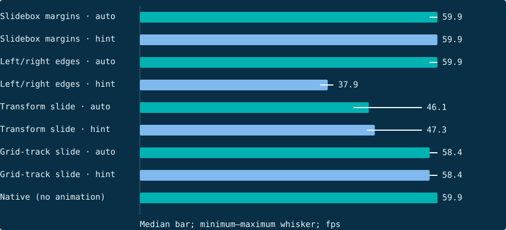
95th-percentile callback interval
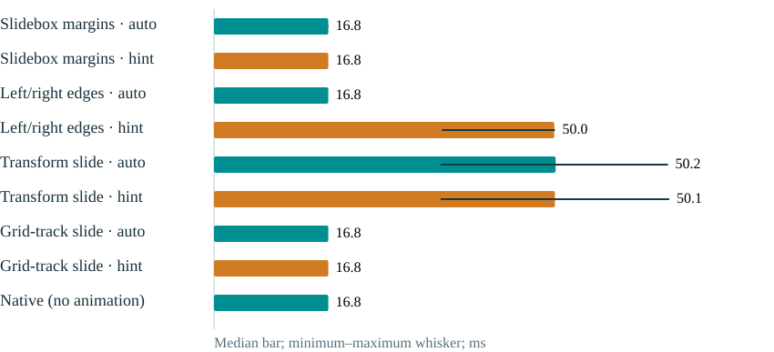
Layout time per two-batch trial
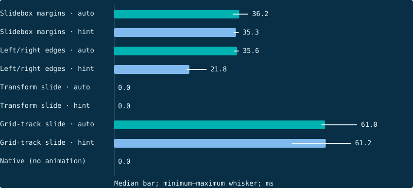
Style recalculation time per trial
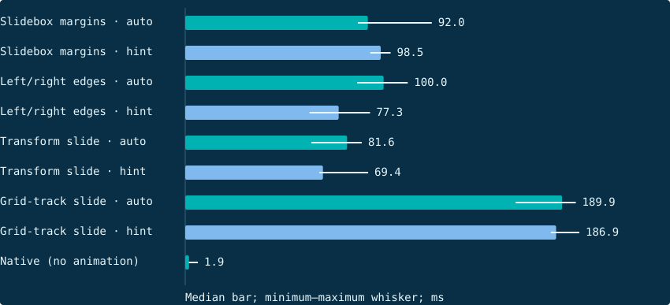
Layout passes per trial
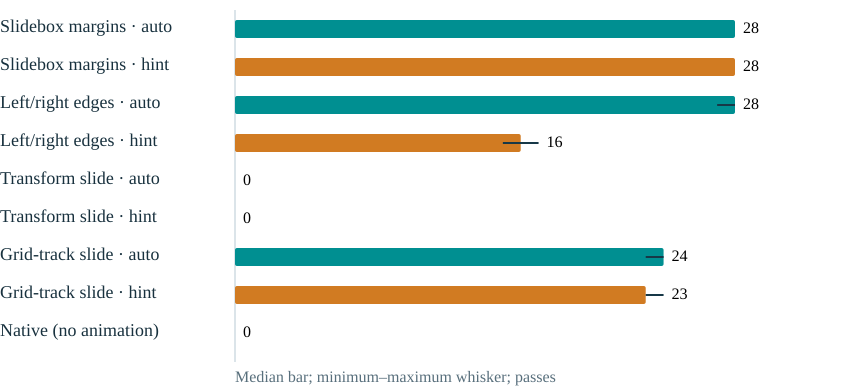
Maximum CLS session score
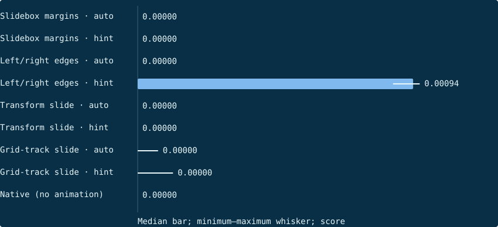
2,000 visible controls
rAF callback FPS
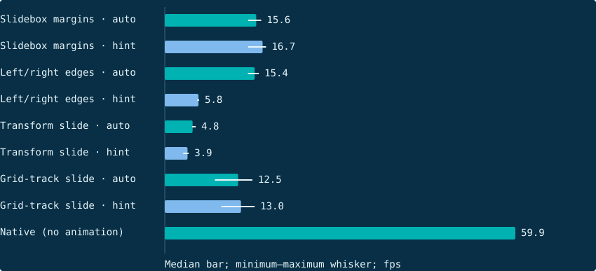
95th-percentile callback interval
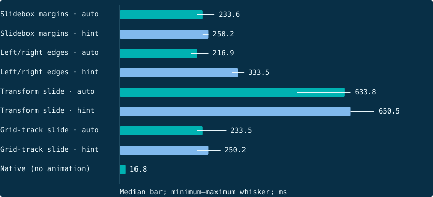
Layout time per two-batch trial
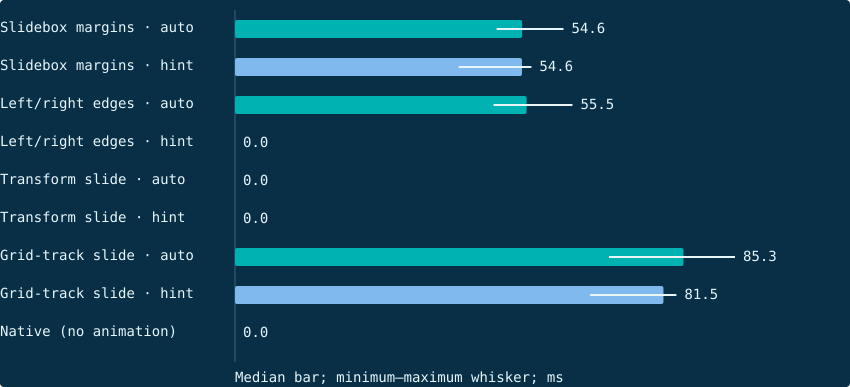
Style recalculation time per trial
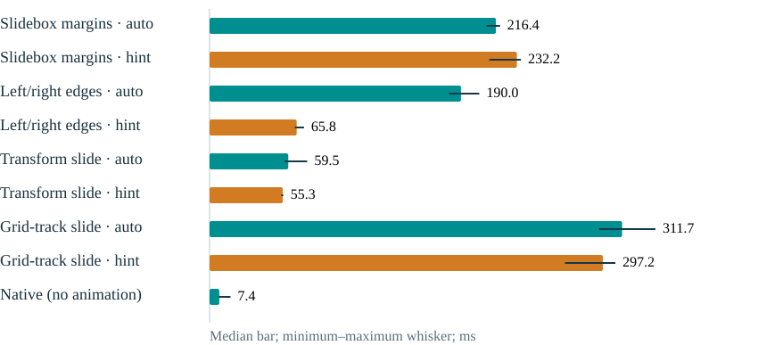
Layout passes per trial
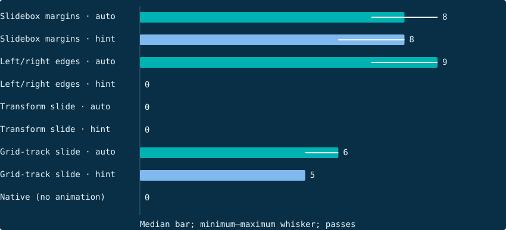
Maximum CLS session score
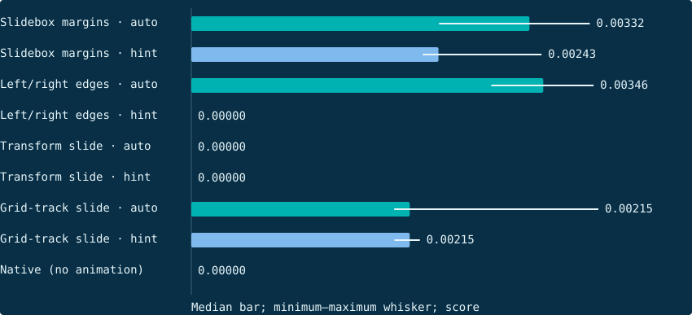
Detailed results
Each cell is the median of independent trials. Zero CLS does not mean zero layout work. These synthetic batch toggles are not real-user INP data. JS heap excludes GPU and compositor memory.
| Technique | Count | Hint | Trials | rAF FPS | p95 frame interval (ms) | Intervals >25ms (%) | Layout passes | Style recalculations | Layout (ms) | Style (ms) | Main thread task (ms) | Shift entries | CLS | Long animation frames | JS heap bytes |
|---|---|---|---|---|---|---|---|---|---|---|---|---|---|---|---|
| Slidebox margins | 500 | auto | 5 | 59.9 | 16.8 | 0.0 | 28 | 30 | 36.2 | 92.0 | 306.8 | 0 | 0.00000 | 0 | 1604500 |
| Slidebox margins | 500 | on | 5 | 59.9 | 16.8 | 0.0 | 28 | 30 | 35.3 | 98.5 | 308.1 | 0 | 0.00000 | 0 | 1604476 |
| Slidebox margins | 2000 | auto | 5 | 15.6 | 233.6 | 60.0 | 8 | 9 | 54.6 | 216.4 | 913.3 | 4 | 0.00332 | 5 | 1158044 |
| Slidebox margins | 2000 | on | 5 | 16.7 | 250.2 | 58.3 | 8 | 9 | 54.6 | 232.2 | 914.0 | 3 | 0.00243 | 5 | 1159404 |
| Left/right edges | 500 | auto | 5 | 59.9 | 16.8 | 0.0 | 28 | 30 | 35.6 | 100.0 | 318.5 | 0 | 0.00000 | 0 | 1606120 |
| Left/right edges | 500 | on | 5 | 37.9 | 50.0 | 50.0 | 16 | 18 | 21.8 | 77.3 | 591.4 | 7 | 0.00094 | 0 | 1620556 |
| Left/right edges | 2000 | auto | 5 | 15.4 | 216.9 | 80.0 | 9 | 10 | 55.5 | 190.0 | 1101.5 | 5 | 0.00346 | 5 | 1095800 |
| Left/right edges | 2000 | on | 5 | 5.8 | 333.5 | 80.0 | 0 | 2 | 0.0 | 65.8 | 1073.7 | 0 | 0.00000 | 2 | 991376 |
| Transform slide | 500 | auto | 5 | 46.1 | 50.2 | 14.3 | 0 | 21 | 0.0 | 81.6 | 384.9 | 0 | 0.00000 | 2 | 1587388 |
| Transform slide | 500 | on | 5 | 47.3 | 50.1 | 13.3 | 0 | 22 | 0.0 | 69.4 | 392.2 | 0 | 0.00000 | 1 | 964640 |
| Transform slide | 2000 | auto | 5 | 4.8 | 633.8 | 80.0 | 0 | 2 | 0.0 | 59.5 | 1314.9 | 0 | 0.00000 | 2 | 995848 |
| Transform slide | 2000 | on | 5 | 3.9 | 650.5 | 80.0 | 0 | 2 | 0.0 | 55.3 | 1410.9 | 0 | 0.00000 | 0 | 1746604 |
| Grid-track slide | 500 | auto | 5 | 58.4 | 16.8 | 2.7 | 24 | 26 | 61.0 | 189.9 | 468.4 | 0 | 0.00000 | 0 | 943428 |
| Grid-track slide | 500 | on | 5 | 58.4 | 16.8 | 2.7 | 23 | 25 | 61.2 | 186.9 | 480.6 | 0 | 0.00000 | 0 | 941068 |
| Grid-track slide | 2000 | auto | 5 | 12.5 | 233.5 | 75.0 | 6 | 8 | 85.3 | 311.7 | 1135.8 | 2 | 0.00215 | 5 | 1108368 |
| Grid-track slide | 2000 | on | 5 | 13.0 | 250.2 | 70.0 | 5 | 7 | 81.5 | 297.2 | 931.8 | 2 | 0.00215 | 4 | 966464 |
| Native (no animation) | 500 | auto | 5 | 59.9 | 16.8 | 0.0 | 0 | 2 | 0.0 | 1.9 | 15.4 | 0 | 0.00000 | 0 | 1534536 |
| Native (no animation) | 2000 | auto | 5 | 59.9 | 16.8 | 0.0 | 0 | 2 | 0.0 | 7.4 | 36.3 | 0 | 0.00000 | 0 | 1770656 |
Separate traced paint diagnostics · 2,000 controls
One instrumented diagnostic per case, not five primary trials. The graph sums inclusive renderer-main-thread Paint event durations, which can overlap nested work. It is not GPU raster time and must not be added to primary untraced timings.
- Slidebox margins · auto trace: 7 Layout events, 16008 Paint events.
- Slidebox margins · hint trace: 6 Layout events, 16008 Paint events.
- Left/right edges · auto trace: 7 Layout events, 16008 Paint events.
- Left/right edges · hint trace: 0 Layout events, 4002 Paint events.
- Transform slide · auto trace: 0 Layout events, 4002 Paint events.
- Transform slide · hint trace: 0 Layout events, 4002 Paint events.
- Grid-track slide · auto trace: 4 Layout events, 20006 Paint events.
- Grid-track slide · hint trace: 5 Layout events, 24007 Paint events.
- Native (no animation) · auto trace: 0 Layout events, 4002 Paint events.
Environment and method
{
"environment": {
"browser": "156.0.8078.4",
"headless": false,
"node": "v26.12.0",
"platform": "linux",
"architecture": "x64",
"kernel": "Linux 7.2.8-9-omarchy",
"cpu": "11th Gen Intel(R) Core(TM) i7-11800H @ 2.30GHz",
"release": "1.3.0",
"cssSha256": "16ba4272fa96b7a72649cacefc977c6580f648827bbcefd3be54a1373cf4b703",
"graphics": {
"devicePixelRatio": 1,
"hardwareConcurrency": 16,
"renderer": "ANGLE (NVIDIA Corporation, NVIDIA GeForce RTX 3060 Laptop GPU/PCIe/SSE2, OpenGL ES 3.2)",
"supportedObservers": [
"element",
"event",
"first-input",
"interaction-contentful-paint",
"largest-contentful-paint",
"layout-shift",
"long-animation-frame",
"longtask",
"mark",
"measure",
"navigation",
"paint",
"resource",
"soft-navigation",
"visibility-state"
]
}
},
"method": {
"viewport": {
"width": 1920,
"height": 1440
},
"trials": 5,
"togglesPerTrial": 2,
"counts": [
500,
2000
],
"animationMs": 200,
"tailDelayMs": 20,
"sample": "rAF intervals overlapping the first 300ms after each actual batch start",
"fps": "1000 / mean sampled rAF interval; not a presented-frame/GPU FPS counter",
"longIntervalThresholdMs": 25,
"willChange": "Property-specific hints, configured before warmup; not promotion guarantees",
"normalization": "Independent technique illustrations; not whole-library/package benchmarks. Same dimensions/colors/duration, transform/grid do not deform.",
"trace": "Primary trials run without DevTools tracing, screenshots, or video recording. CDP Performance counters sampled at trial boundaries."
},
"startedAt": "2026-10-31T08:57:18.788Z",
"completedAt": "2026-10-31T09:00:05.804Z"
}Harness source: primary runner · diagnostic trace collector · HTML/CSS scene.